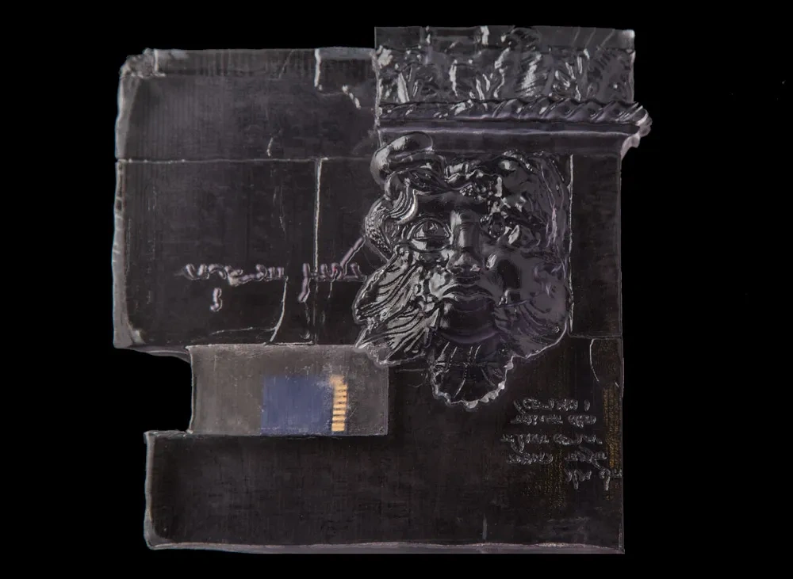
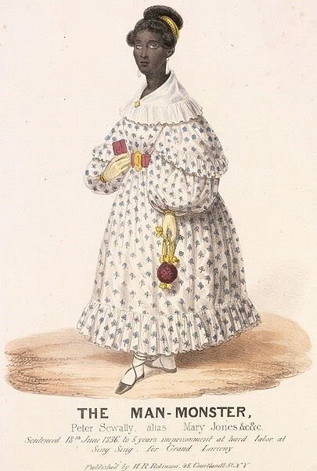
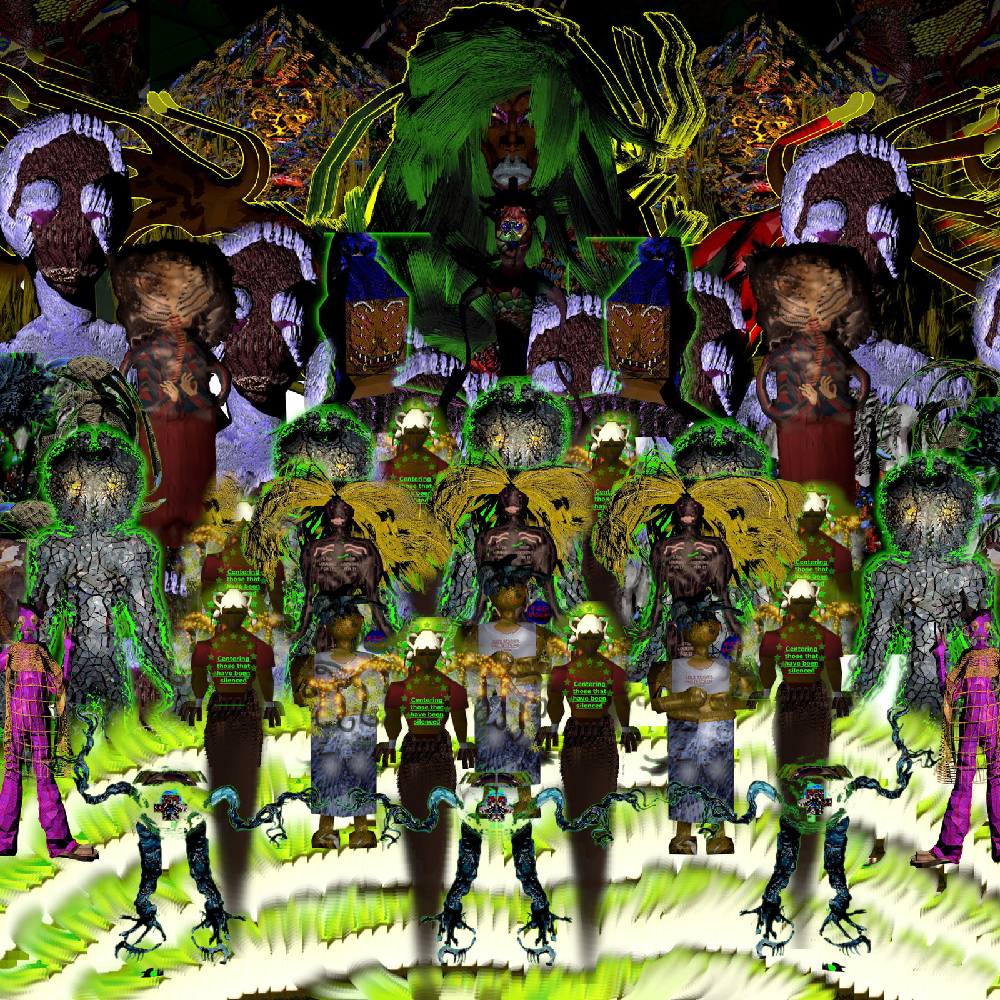
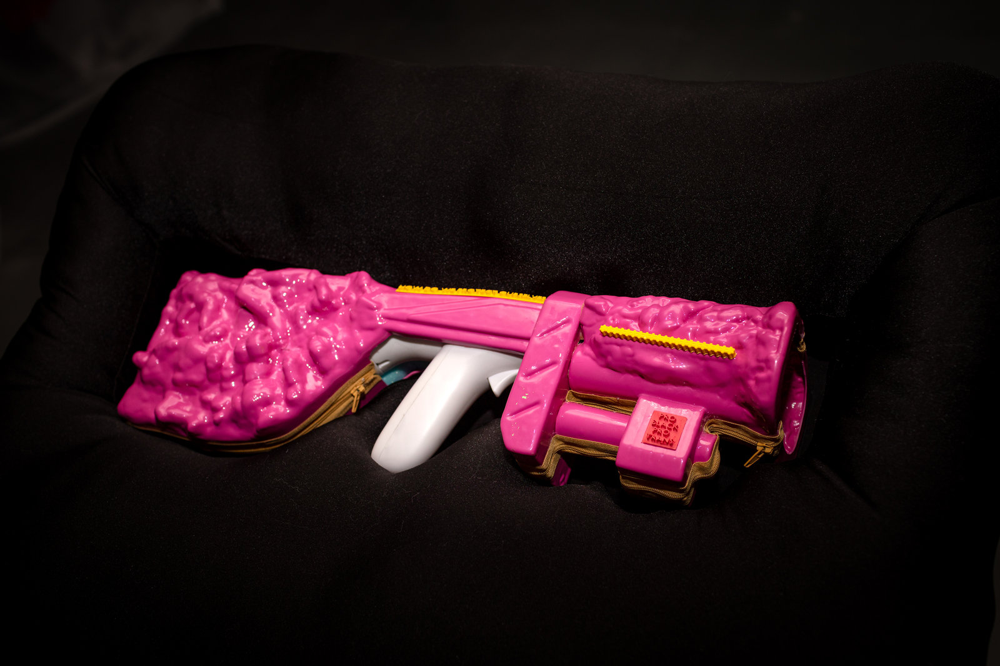
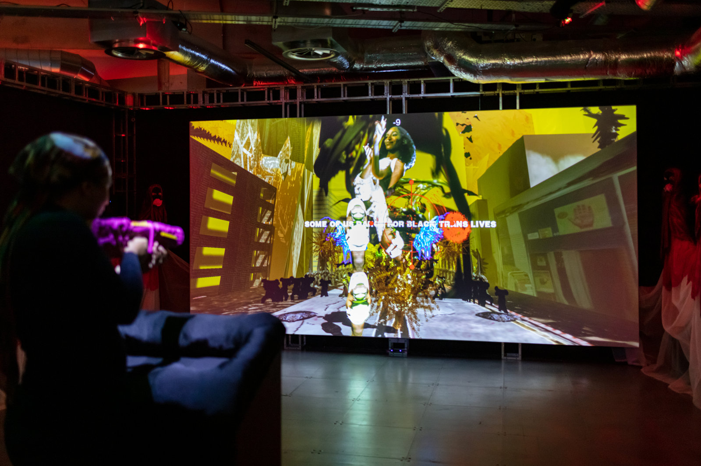
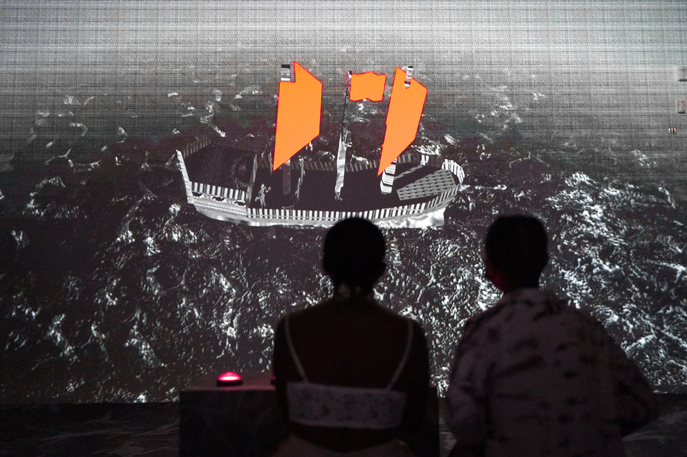
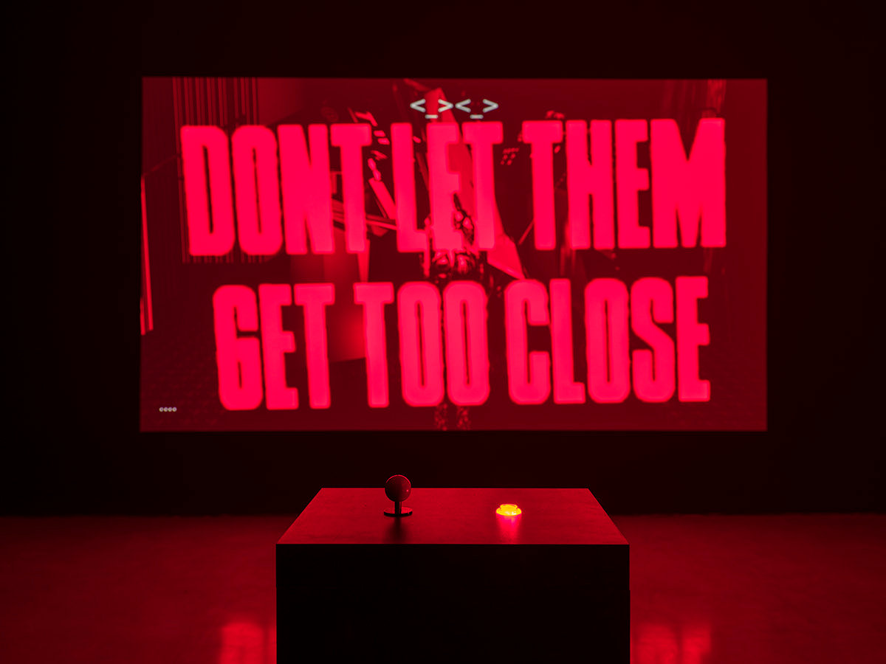
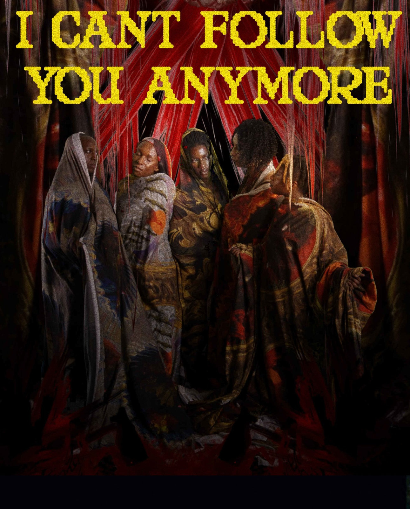
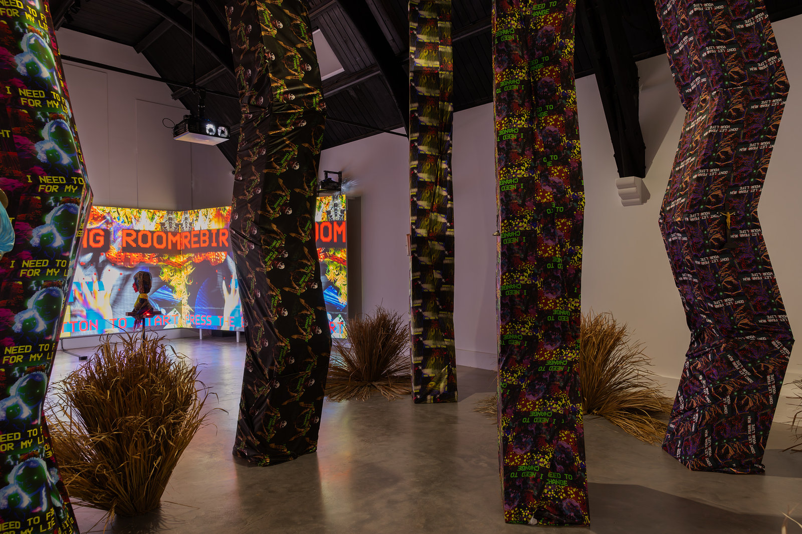

Mondi virtuali · Audiovisivi per il web
Mondi altri, altre soggettività
Chi scrive le regole del gioco. Artisti che usano i mondi virtuali per mettere in questione stereotipi e narrazioni dominanti; caso principale, Danielle Brathwaite-Shirley.
Lezione precedente: World building e worlding. Frecce ← → per passare da un blocco all'altro, clic su un'immagine per ingrandirla.
Tre piani dello stereotipo
In un mondo virtuale lo stereotipo non sta solo nell'immagine: sta anche nelle regole e negli strumenti.
Immagine
Chi compare e come. Per Brathwaite-Shirley la rappresentazione delle persone trans nei videogiochi è «frankly abysmal» (Queer Direct, 2020).
Regola
Che cosa il mondo permette di fare. Il controller più facile da capire per tutti è una pistola: il verbo di base del videogioco è sparare.
Strumento
Chi possiede i mezzi, i dati, il codice. Il blu del chroma-key, colore che nessuna pelle ha (Soyoung Yoon su Sondra Perry); il digital colonialism di Morehshin Allahyari.
Anna Anthropy, game designer, citata da Hans Ulrich Obrist in WORLDBUILDING (2022): i giochi sono stati fatti a lungo da un gruppo ristretto di ingegneri; l'obiettivo è una pluralità di voci.
Entrare nel mondo degli altri
Angela Washko, The Council on Gender Sensitivity and Behavioral Awareness in World of Warcraft 2012-16
Giocatrice da sei anni, Washko smette di giocare e si sposta nelle città di World of Warcraft per discutere con gli utenti di come vi sono trattate le donne. Il gioco come spazio pubblico in cui fioriscono le ideologie represse altrove.

Sondra Perry, IT'S IN THE GAME '17 2017
L'immagine e le statistiche del fratello gemello, giocatore di basket universitario, vendute dalla NCAA a EA Sports senza consenso. Perry le accosta ai manufatti africani nei musei del Nord globale: cultura nera sottratta senza consenso né compenso.

Riscrivere l'immagine
- Sara Sadik, Khtobtogone (2021): le ambientazioni di GTA ridisegnate attorno a un giovane marsigliese della diaspora maghrebina che lavora come rider.
- Lawrence Lek, Sinofuturism (1839–2046 AD) (2016): sette stereotipi occidentali sulla Cina rimessi in fila come sintomi dell'accelerazione tecnologica. Unreal Estate (2015): la Royal Academy venduta a un miliardario cinese.
- Jacolby Satterwhite, We Are in Hell When We Hurt Each Other (2020): il corpo nero non più erotizzato ma rituale; un mondo costruito sulla voce della madre.


L'archivio che è mancato
Dove l'archivio ufficiale non conserva una storia, il mondo virtuale la ricostruisce.
- Morehshin Allahyari, Material Speculation: ISIS (2015-16): dodici manufatti distrutti nel 2015, ricostruiti in 3D con dentro una memoria di documenti. Re-figuring: recuperare un passato travisato per immaginare un altro presente.
- Gabriel Massan, THIRD WORLD: THE BOTTOM DIMENSION (dal 2022): «fictional archaeology» dell'America Latina nera e indigena.
- Danielle Brathwaite-Shirley: cercando le persone nere trans nella storia trova quasi solo documenti di seconda mano. Mary Jones, 1836: un manifesto che la chiama «Man-Monster», le carte del suo arresto e nient'altro. «Archives actually failed».



Danielle Brathwaite-Shirley
Nata a Londra nel 1995, vive tra Berlino e Londra; Slade School of Fine Art, 2019. Animazione, suono, performance, videogiochi. La Serpentine definisce il lavoro «archive and insurgency».
- Niente trauma rimesso in scena: lo si discute, non lo si ricrea. L'horror è rivolto a chi guarda dall'esterno.
- Avatar semi-astratti, voci in autotune, grafica da prima PlayStation.
- «The audience as medium»: l'opera quasi non esiste finché il pubblico non la tocca.
Dal film al gioco
Un film si consuma e serve lo sguardo di chi guarda; un gioco chiede energia e chiede a chi gioca chi è (Highsnobiety, 2024).
I giochi
WE ARE HERE BECAUSE OF THOSE THAT ARE NOT 2020 · blacktransarchive.com
Prima domanda: «WHAT DO YOU IDENTIFY AS?». Chi si dichiara nero e trans incontra un antenato e cerca il suo deadname; chi è trans può resuscitare un antenato; chi è cis viene accusato di aver nascosto gli antenati e deve accettare termini e condizioni. Fatto con circa quindici persone nere trans, che hanno disegnato i personaggi.

SHE KEEPS ME DAMN ALIVE 2021 · arebyte Gallery, Londra
Arcade punta e spara in Unity, con una pistola rosa stampata in 3D: «can you protect Black trans people with a gun?». Il gioco rimprovera chi è contento di impugnare l'arma. Partite trasmesse in diretta su Twitch.


I CANT REMEMBER A TIME I DIDNT NEED YOU 2020 · avventura testuale in Twine
Una città avvolta in una nebbia che sostiene la vita nera trans. Per entrare bisogna registrare la propria identità; club, farmacia, tempio e corteo cambiano secondo le risposte. Alle persone cis la nebbia rimuove lo «sguardo violento». Il gioco chiede di scrivere, e di ripetere frasi ad alta voce.
Pirating Blackness 2021 · blacktranssea.com
«Who were your ancestors?»: «Those that were carried across the sea» o «Colonisers». I primi ricevono una nave carica della loro storia e cercano un'isola; i secondi lasciano «un'isola che non è mai stata vostra» e la loro nave viene distrutta.

GET HOME SAFE 2022 · David Kordansky Gallery, Los Angeles
Tornare a casa da soli di notte: le chiavi in tasca possono aprire la porta o diventare un'arma. Le scelte decidono se si arriva o se si impedisce a qualcun altro di arrivare.

I CAN'T FOLLOW YOU ANYMORE 2023 · blacktransrevolution.com
Un dio-vampiro risvegliato sceglie tre «vangeli» tra parole come Trauma, Trans, Cancel, Tolerance, Fascist, e guida una setta: convincere, farsi pagare, eliminare le imitazioni, reprimere la rivolta. Gioco ritmico in Godot. Per l'artista, un gioco sul fascismo.

THE REBIRTHING ROOM 2024 · Studio Voltaire e THE DELUSION 2025 · Serpentine
Il visore VR trasformato in controller collettivo; poi giochi multigiocatore su polarizzazione e censura, con pistole a forma di lampada.

Come sono fatti
Film interattivi a bivi
Clip video preregistrate collegate da scelte: Black Trans Archive (48 clip, tasti 1-2-3), Resurrection Lands, Pirating Blackness. Chi gioca non si muove nello spazio: sceglie il montaggio.
Avventure testuali
I CANT REMEMBER in Twine, 142 passaggi. Per l'artista a volte serve un motore testuale degli anni Settanta più che uno per immagini.
Motori in tempo reale
Unity (SHE KEEPS ME DAMN ALIVE), Godot (I CAN'T FOLLOW YOU ANYMORE), UPBGE, il motore di gioco nato da Blender (THE DELUSION).
Il motore come mezzo espressivo, al modo in cui la critica letteraria studia la lingua di un libro (CIRCA, 2025).
Il metodo dell'archivio
- Una persona racconta un episodio della propria infanzia; personaggi, mondo, suono e scelte del gioco si costruiscono attorno a quel momento. Il risultato torna alla persona: se non si riconosce, si rifà.
- Per blacktransarchive.com, una chiamata aperta e un gruppo di circa quindici persone nere trans che decide a ogni livello, e toglie ogni traccia di trauma.
- Avatar da persone reali: riprese convertite con DeepMotion (SHE KEEPS ME DAMN ALIVE), ritratti al rallentatore con stoffe e ventilatori (I CAN'T FOLLOW YOU ANYMORE).
- Il software come diario: 3D, codice e game design imparati da sé, usati ogni giorno per registrare ciò che accade.
Fonti
- Scheda del database: Danielle Brathwaite-Shirley, con sinossi e gameplay dei giochi, interviste, talk e note.
- Altre schede: Angela Washko, Sondra Perry, Sara Sadik, Lawrence Lek, Jacolby Satterwhite, Morehshin Allahyari, Gabriel Massan.
- WORLDBUILDING: Gaming and Art in the Digital Age, booklet della mostra, Julia Stoschek Collection, Düsseldorf, 2022.
- Interviste: Queer Direct (2020), Fact (2023), Highsnobiety (2024), CIRCA (2025); MUBI Notebook, «Cutscenes» (2024); Art Monthly n. 474 (2024).
- Le immagini sono usate a scopo didattico. Se sei titolare dei diritti e vuoi che un'immagine venga tolta, apri una issue nel repository.